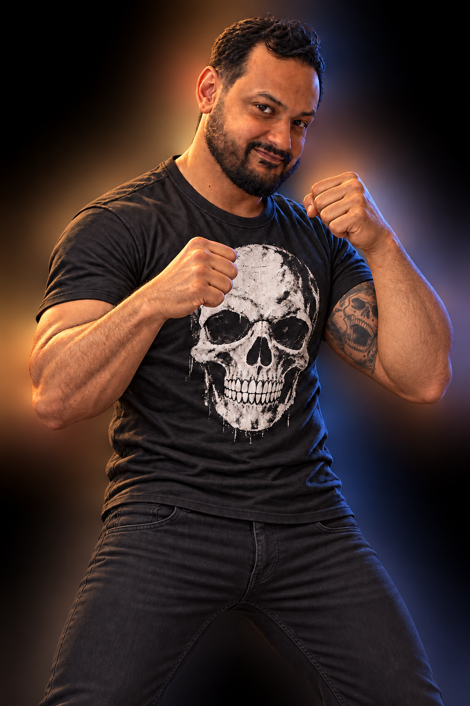
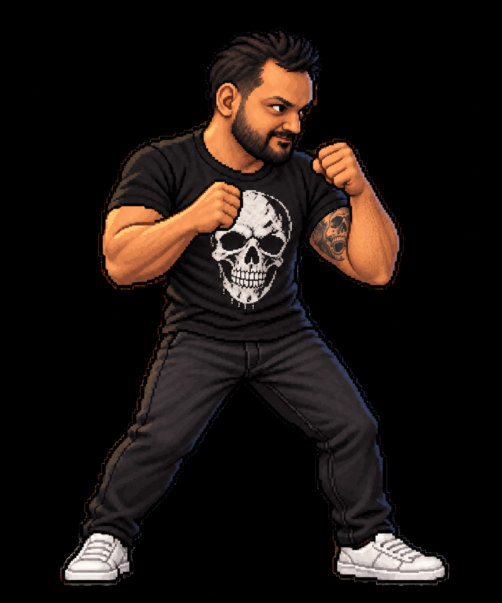
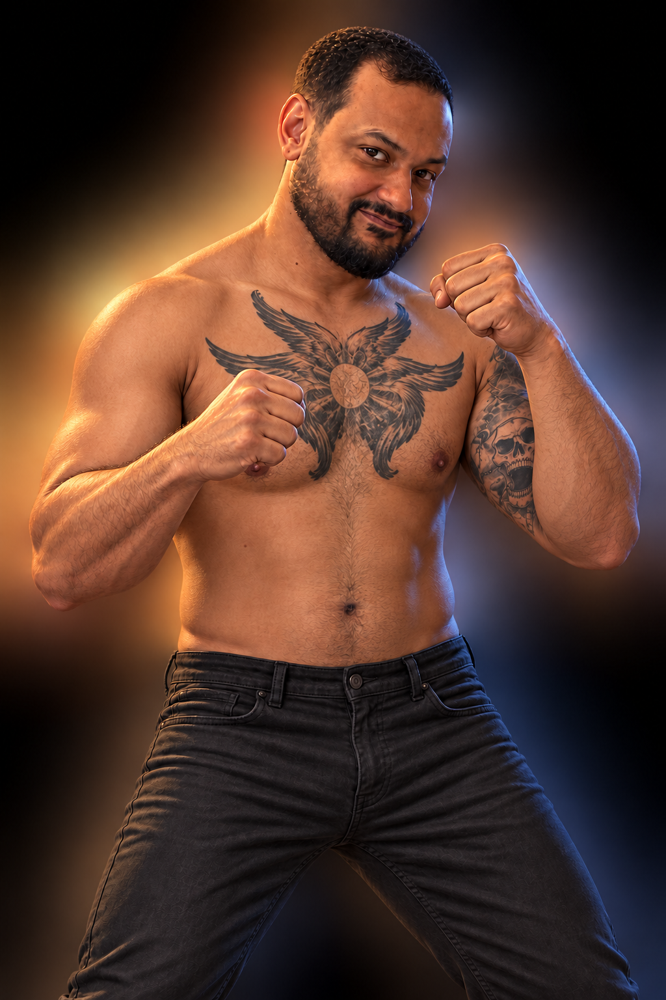
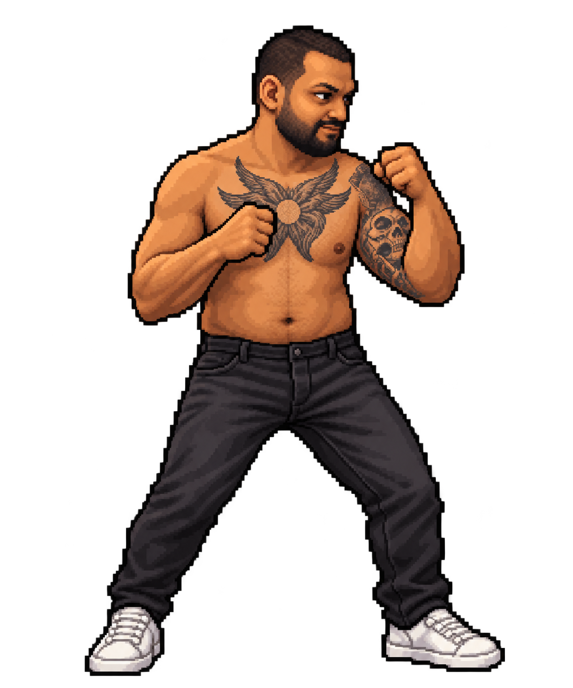

01 / SKULL T-SHIRTNormal hair · Black slim pants · White sneakersMENU PORTRAITPIXEL FIGHTER / STATIC LOOK
02 / SHIRTLESSVery short hair · Black slim pants · White sneakersMENU PORTRAITPIXEL FIGHTER / STATIC LOOK